José Manuel Góngora Compeán
Ingeniería Mecatrónica
Apasionado por la robótica, los deportes de contacto y fan número uno de Cristiano Ronaldo.
203609@iberopuebla.mxAquí vamos a reportar paso a paso lo que es nuestra placa, cómo la creamos y su diseño.
Ingeniería Mecatrónica
Apasionado por la robótica, los deportes de contacto y fan número uno de Cristiano Ronaldo.
203609@iberopuebla.mx
Ingeniería Mecatrónica
Gran fan de todo lo relacionado con la industria automotriz. Espera aplicar los conocimientos de la carrera en proyectos de este sector.
203902@iberopuebla.mxLa producción electrónica es el proceso de diseñar, fabricar, ensamblar y verificar dispositivos y circuitos electrónicos. Su objetivo es transformar un diseño en un producto funcional que cumpla con los requisitos de calidad y funcionamiento.
En una placa de circuito impreso (PCB), este proceso incluye elaborar el diagrama del circuito, seleccionar los componentes, diseñar las pistas y fabricar la placa. Después se colocan y sueldan los componentes y se realizan pruebas para comprobar su funcionamiento.
En este proyecto documentamos la preparación del diseño en KiCad. Explicamos las herramientas, los parámetros utilizados y la relación entre el esquemático y la distribución física de nuestra placa.
KiCad es el programa que utilizamos para elaborar el esquemático y diseñar nuestra placa. Antes de colocar los componentes, necesitamos instalarlo y crear un proyecto que reúna los archivos del circuito.
Entramos al sitio oficial de KiCad y seleccionamos la descarga correspondiente al sistema operativo de nuestra computadora.
Ejecutamos el instalador y seguimos sus indicaciones. Incluimos las bibliotecas estándar para disponer de símbolos y huellas al comenzar el diseño.
Al iniciar encontramos el administrador de proyectos. Desde esta ventana podemos crear el proyecto y acceder a los editores que utilizaremos durante el trabajo.
Seleccionamos Archivo, Nuevo proyecto y elegimos un nombre y una ubicación. Guardamos los archivos en una carpeta propia para mantener organizado el trabajo.

Aquí representamos los componentes mediante símbolos y definimos sus conexiones eléctricas. Todavía no estamos dibujando las pistas físicas de la placa.
Aquí colocamos las huellas, definimos el contorno y trazamos las pistas de cobre siguiendo las conexiones del esquemático.

Además de las bibliotecas incluidas con KiCad, utilizamos una biblioteca complementaria para trabajar con los componentes de la práctica. Su nombre es Kicad FabLib.
Una biblioteca permite organizar y reutilizar símbolos o huellas. El símbolo representa al componente en el esquemático; la huella define sus puntos de conexión y su distribución física sobre la placa.
Descargamos el paquete indicado para la clase y, si está comprimido, lo extraemos. Conservamos sus archivos en una ubicación estable para evitar que KiCad pierda sus rutas.
Si el paquete incluye un archivo .kicad_sym, abrimos Preferencias y Administrar bibliotecas de símbolos. Agregamos la biblioteca existente seleccionando ese archivo.
Si contiene una carpeta .pretty, la agregamos desde Administrar bibliotecas de huellas. Esa carpeta reúne las huellas disponibles para el diseño de la PCB.
Abrimos el selector de símbolos y buscamos el nombre de la biblioteca o del componente. Revisamos también que sus huellas puedan seleccionarse al realizar la asignación.
Podemos registrar una biblioteca para todos los proyectos o únicamente para el proyecto actual. Si el paquete se instala mediante un gestor de complementos, seguiremos sus instrucciones en lugar de repetir el registro manual.
El esquemático es nuestra guía de conexiones. En esta etapa colocamos los símbolos de las resistencias, los interruptores y los demás componentes del circuito. Su posición ayuda a leer el diagrama, pero no determina todavía su ubicación final sobre la PCB.
Desde el administrador de proyectos abrimos el archivo .kicad_sch. Aparecerá la hoja donde construiremos el diagrama.
Con el cursor sobre la hoja presionamos A, el atajo predeterminado para añadir símbolos. En el cuadro de búsqueda escribimos el nombre del componente o de la biblioteca Kicad FabLib.
Revisamos el símbolo y sus terminales, confirmamos la selección y hacemos clic para colocarlo. Repetimos el proceso con los componentes que necesita el circuito.
Utilizamos M para mover y R para girar el elemento señalado. Buscamos una distribución legible y dejamos espacio para las conexiones.
Con E abrimos las propiedades del símbolo. Revisamos su referencia y su valor, utilizando los datos del circuito de la práctica.
Con W comenzamos un cable desde una terminal y lo llevamos a la terminal correspondiente. Comprobamos las uniones para evitar extremos que solo parezcan conectados.

Después de colocar los símbolos, asignamos las huellas de los componentes que se montarán en la placa. Una huella contiene los pads donde se conectan o sueldan sus terminales y las referencias geométricas necesarias para colocarlo.
Explica la función y las conexiones eléctricas del componente. Por ejemplo, el símbolo de una resistencia indica sus dos terminales.
Corresponde al encapsulado físico. Define las dimensiones y la separación de los pads que deben coincidir con el componente real.
En el editor de esquemáticos abrimos Herramientas y Asignar huellas. Seleccionamos el componente que queremos configurar.
Localizamos la biblioteca correspondiente y revisamos las opciones disponibles. No elegimos únicamente por el nombre: comprobamos las medidas del componente real.
Revisamos la cantidad y numeración de pads, su separación y si el componente es de montaje superficial o de orificio pasante.
Confirmamos la huella y repetimos la revisión para cada componente. Guardamos los cambios antes de trasladar el diseño al editor de PCB.

Con el esquema y las huellas preparados pasamos al diseño físico. Antes de trasladarlo revisamos las referencias de los componentes y ejecutamos la comprobación de reglas eléctricas del esquemático.
Utilizamos la opción Actualizar PCB desde el esquemático, cuyo atajo predeterminado es F8. Revisamos los cambios propuestos y confirmamos la actualización.
Las huellas se incorporan al editor de PCB. Las colocamos en el área de trabajo y comenzamos a distribuirlas según sus conexiones.
Las líneas guía muestran qué pads necesitan conectarse. Estas líneas todavía no son pistas de cobre: sirven como referencia para realizar el trazado.
Acomodamos los componentes para facilitar los recorridos y dejar espacio para soldar. Revisamos la orientación de las piezas y el acceso a los interruptores y conectores.

Si necesitamos modificar una conexión eléctrica, realizamos el cambio en el esquemático y volvemos a actualizar la PCB. De esta manera mantenemos ambos archivos consistentes.
Antes de trazar las conexiones definimos los anchos que utilizaremos. Para nuestro proyecto establecimos un mínimo de 0.4 mm y un máximo elegido de 0.8 mm, considerando el espacio disponible y el proceso de fabricación.

Abrimos la configuración de la placa y revisamos las restricciones de diseño. Establecemos el ancho mínimo de pista y comprobamos las separaciones necesarias.
Después configuramos los anchos predefinidos que utilizaremos durante el trazado. Seleccionamos 0.4 mm para comenzar las conexiones de esta práctica.
El ancho de pista y la separación entre pistas son parámetros diferentes. Revisaremos ambos de acuerdo con la corriente del circuito, el espesor del cobre y las capacidades de la máquina CNC ________.
Ahora convertimos las conexiones pendientes en pistas de cobre. Seguimos las líneas guía del editor y trabajamos con los anchos definidos previamente.
Activamos la capa de cobre en la que trazaremos y elegimos el ancho de 0.4 mm. Comprobamos estos ajustes antes de iniciar.
Situamos el cursor sobre el pad de origen y activamos Enrutar pistas. El atajo predeterminado es X.
Guiamos la pista hacia su destino. Buscamos trayectorias claras y evitamos rodeos innecesarios, respetando el espacio entre componentes y otras conexiones.
Llegamos al pad de destino y confirmamos el trazado. Revisamos que la conexión pendiente correspondiente haya quedado resuelta.
Continuamos con las demás conexiones. Si no encontramos un recorrido adecuado, revisamos la colocación de los componentes antes de forzar una pista.

En esta etapa diferenciamos dos elementos: el contorno físico que determina la forma de la placa y las zonas de cobre que forman parte de su diseño eléctrico.
Seleccionamos Edge.Cuts y dibujamos un perímetro cerrado con las dimensiones de nuestra placa. Revisamos que sus extremos coincidan y que no existan segmentos duplicados o cruces.
Seleccionamos F.Cu y utilizamos la herramienta Dibujar zonas rellenas. Elegimos la red eléctrica a la que pertenecerá la zona y configuramos sus separaciones.

Colocamos sus vértices alrededor del área que queremos rellenar y cerramos el polígono.
Utilizamos la orden de rellenar zonas. Su atajo predeterminado es B. Revisamos el cobre generado alrededor de las pistas y pads.
Verificamos la red asignada, las separaciones y las conexiones de los pads con el relleno. Revisamos también las posibles áreas de cobre que hayan quedado aisladas.
El DRC, por sus siglas en inglés Design Rules Check, es el comprobador de reglas de diseño de KiCad. Nos ayuda a encontrar problemas en la PCB, como separaciones insuficientes, pistas demasiado estrechas o conexiones que todavía no hemos terminado.
Esta herramienta compara nuestra placa con las reglas configuradas en el proyecto. Por eso, antes de utilizarla, debemos revisar que los parámetros correspondan con los requisitos del circuito y las capacidades de fabricación.
Abrimos el editor de PCB y guardamos los cambios. Si modificamos el esquemático, actualizamos la PCB desde este. También actualizamos las zonas de cobre con la tecla B, si conservamos los atajos predeterminados.
En el editor de PCB entramos al menú Inspeccionar y seleccionamos Comprobador de reglas de diseño. El nombre puede variar ligeramente según el idioma y la versión de KiCad.
Pulsamos el botón para ejecutar el DRC. Esperamos a que termine el análisis y revisamos la lista de infracciones y conexiones pendientes.
Hacemos doble clic sobre un resultado para localizar los elementos involucrados en la placa. Leemos el mensaje para identificar qué regla no se está cumpliendo.
Ajustamos la pista, el componente o la zona correspondiente. La solución dependerá del problema: aumentar una separación, completar una conexión o corregir el ancho de una pista.
Guardamos, actualizamos los rellenos y ejecutamos nuevamente el DRC. Repetimos el proceso hasta resolver los problemas detectados y revisar cualquier advertencia restante.
Dos elementos de cobre están más cerca de lo permitido. Revisamos la distancia entre pistas, pads y zonas, y modificamos su distribución.
Hay puntos que deberían estar unidos y todavía no tienen una conexión completa. Localizamos los pads y terminamos el trazado correspondiente.
Una pista incumple una restricción configurada. En nuestro proyecto, si establecemos 0.4 mm como mínimo, una pista menor a ese valor puede generar una infracción.
El contorno puede tener extremos abiertos, segmentos duplicados o intersecciones. Revisamos Edge.Cuts para obtener un perímetro cerrado y sin cruces.
El DRC nos ayuda a revisar el diseño físico, pero no garantiza que el circuito funcione eléctricamente. También debemos comprobar el esquemático, la selección de componentes y, después del ensamblaje, realizar las pruebas de funcionamiento.
Antes de fabricar, revisaremos el diseño completo. Esta comprobación permite detectar problemas que podrían pasar inadvertidos al observar únicamente la apariencia de la placa.
Guardaremos el esquemático y la PCB. Si hubo cambios eléctricos, actualizaremos la placa desde el esquema y volveremos a rellenar las zonas.
En el esquemático ejecutaremos el ERC. Revisaremos cada aviso para identificar posibles conexiones incompatibles o terminales que requieren atención.
En el editor de PCB ejecutaremos el DRC. Revisaremos separaciones, anchos, conexiones pendientes y errores del contorno. Corregiremos los problemas antes de continuar.
Revisaremos la orientación, las huellas y las dimensiones. La vista 3D puede ayudar a comprender la distribución, aunque no sustituye las comprobaciones eléctricas.
Generaremos los archivos que acepte el programa utilizado para preparar la fabricación. Si requiere Gerber y archivos de taladrado, exportaremos las capas necesarias, el contorno y las perforaciones correspondientes.
En el software de fabricación se definirán las herramientas y las trayectorias compatibles con la máquina. El formato final y los parámetros se documentarán en los apartados de Monofab y CNC cuando realicemos esta etapa.
Después de diseñar nuestra placa en KiCad, utilizamos Mods CE para preparar los archivos de mecanizado de la Roland monoFab SRM-20. En esta etapa cargamos los diseños, configuramos las herramientas y calculamos las trayectorias que seguirá la máquina.
Organizamos el trabajo en tres archivos independientes: el contorno exterior, las pistas y etiquetas, y los orificios para los componentes. Cada operación utiliza su propia configuración.
Abrir Mods CE ↗Entramos a Mods CE y abrimos el menú Programs, ubicado en la esquina superior izquierda. En el buscador escribimos sr y localizamos la categoría SRM-20 mill.
Dentro de esta categoría seleccionamos mill 2D PCB. Se abre el conjunto de módulos que utilizaremos para cargar los archivos y preparar las operaciones de nuestra placa.
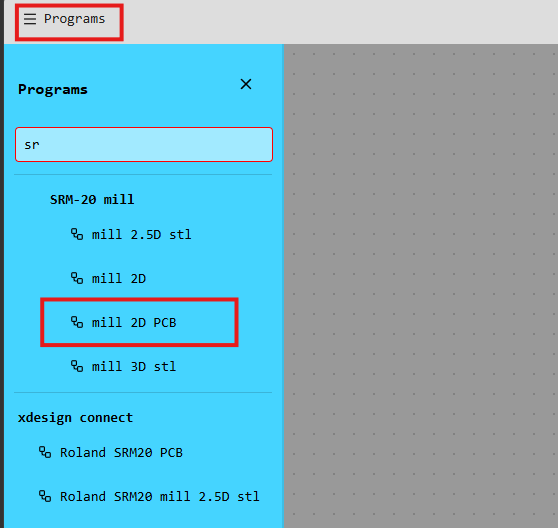
Comenzamos con el archivo que define la forma exterior de nuestra placa.
En el módulo read SVG, ubicado en la parte superior izquierda, presionamos select SVG file y seleccionamos el archivo del contorno exportado desde KiCad.
En nuestro caso corresponde a la capa Edge.Cuts. Después de cargarlo, comprobamos que la figura aparezca completa y revisamos sus dimensiones.
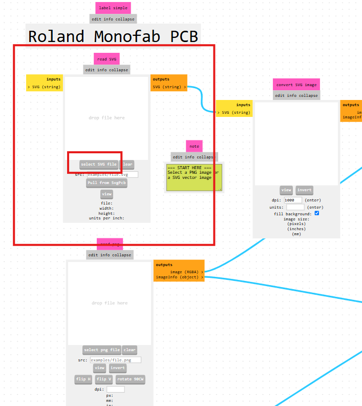
Localizamos el módulo set PCB defaults y cambiamos el selector de unidades a mm. Dentro de la categoría Cutout, seleccionamos 1.59 mm cutout como ajuste inicial.
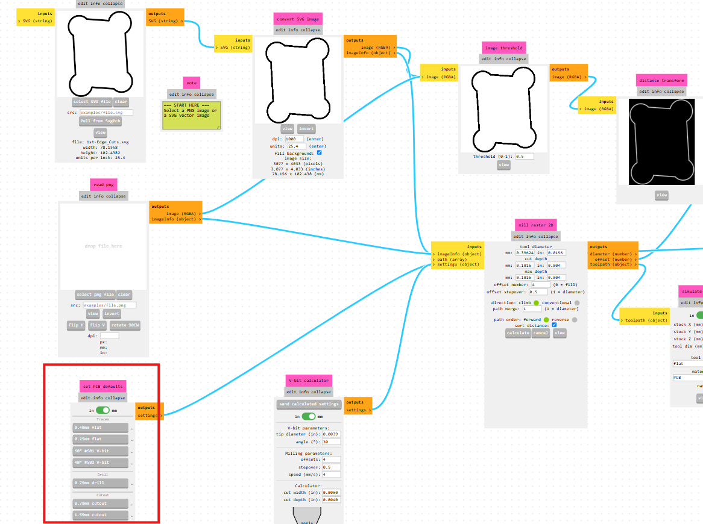
Después nos dirigimos a mill raster 2D. En el procedimiento mostrado cambiamos tool diameter, en milímetros, a 1.9.
Al modificar tool diameter, el cálculo utiliza 1.9 mm como diámetro de herramienta. Este valor debe corresponder con la herramienta que se montará en la máquina; seleccionar primero 1.59 mm cutout no mantiene ese diámetro después de cambiarlo.
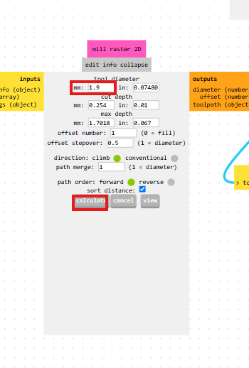
Presionamos calculate en mill raster 2D para generar las trayectorias. Revisamos la vista previa y comprobamos que el recorrido siga la forma exterior de nuestra placa.
La simulación nos permite observar el resultado previsto del mecanizado. Revisamos que el contorno esté completo y que no aparezcan recorridos inesperados.
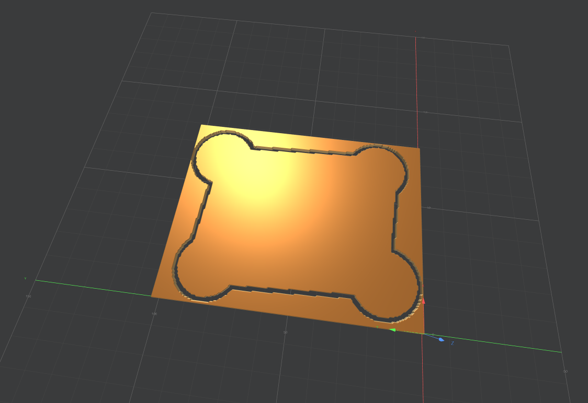
En el módulo Roland SRM-20 milling machine, localizamos el apartado origin y establecemos sus tres coordenadas en cero.
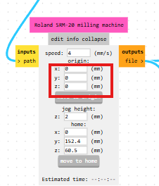
Estos campos configuran el origen en Mods. Posteriormente también estableceremos el origen de trabajo en la máquina. En este paso modificamos origin, conservando los campos home y jog height.
Con la configuración final revisada, nos desplazamos al módulo save file, ubicado a la derecha. Cuando el archivo esté disponible, presionamos save file para descargarlo en formato .rml.
Podemos identificarlo como contorno.rml
para distinguirlo de las demás operaciones.
Antes de refrescar la página, comprobamos que la
descarga haya terminado.
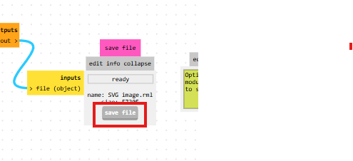
Preparamos un segundo archivo con la configuración correspondiente al mecanizado de las pistas.
Después de guardar el contorno, refrescamos la página y volvemos a seleccionar SRM-20 mill → mill 2D PCB. En read SVG cargamos el archivo de las pistas y etiquetas.
En el módulo convert SVG image, ubicado a su derecha, presionamos invert. Para nuestro archivo, este paso intercambia las zonas blancas y negras y deja la imagen que utilizaremos para calcular las trayectorias.
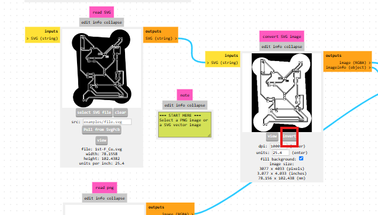
En set PCB defaults, seleccionamos las unidades en milímetros y elegimos 0.40 mm flat, dentro de Traces.
Esta configuración corresponde a una herramienta plana de aproximadamente 0.40 mm. En nuestra captura, el campo tool diameter muestra 0.39624 mm; conservamos el valor establecido por el ajuste.
En mill raster 2D, localizamos offset number y cambiamos su valor de 4 a 2.
Con este ajuste solicitamos dos recorridos laterales alrededor de los bordes detectados para retirar material junto a las pistas. Este valor corresponde al número de recorridos laterales, no a la profundidad de corte.
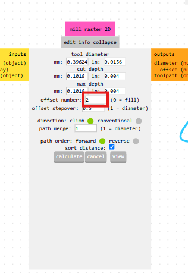
En Roland SRM-20 milling machine, establecemos nuevamente origin X, Y y Z en 0 mm.
Regresamos a mill raster 2D y presionamos calculate. Revisamos que en la simulación aparezcan las pistas y etiquetas completas y que las trayectorias correspondan con nuestro diseño.
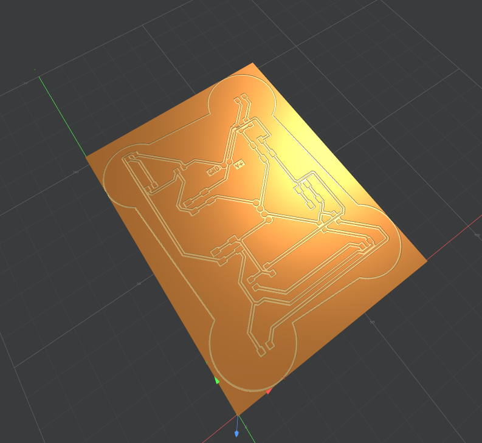
Después de revisar las trayectorias, utilizamos el módulo save file para descargar el segundo archivo .rml.
Guardamos esta operación en un archivo diferente al del contorno, ya que utiliza otra herramienta y otra configuración de mecanizado.
Generamos el tercer archivo para las perforaciones donde se colocarán los componentes.
Con el archivo de pistas guardado, cargamos el SVG de los orificios mediante read SVG → select SVG file.
Revisamos que la vista previa muestre las perforaciones previstas para los componentes. En nuestra captura, estas aparecen como pequeños puntos sobre el fondo blanco.
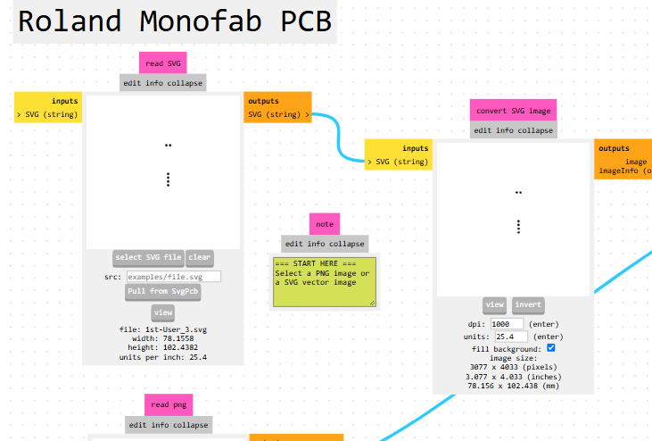
En set PCB defaults, con las unidades en milímetros, seleccionamos 0.79 mm drill dentro de la categoría Drill.
Para este procedimiento conservamos los valores que establece esta opción en mill raster 2D, sin modificarlos manualmente.
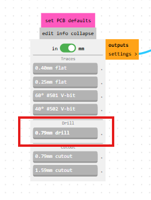
En Roland SRM-20 milling machine, configuramos las coordenadas de origin en cero y cambiamos speed a 0.3 mm/s.
La unidad mm/s significa milímetros por segundo. Este es el valor de velocidad de avance utilizado en nuestro procedimiento para preparar el archivo de los orificios.
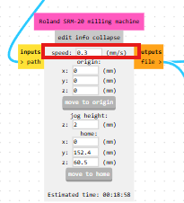
Regresamos a mill raster 2D y presionamos calculate. Revisamos las trayectorias de las perforaciones y descargamos el resultado mediante save file.
Podemos nombrar este tercer archivo
orificios.rml. Al terminar, contamos
con los tres archivos de mecanizado organizados
por operación.
| Nombre sugerido | Operación | Configuración documentada |
|---|---|---|
contorno.rml |
Recorte del borde exterior. | 1.59 mm cutout como ajuste inicial; tool diameter modificado a 1.9 mm. |
pistas.rml |
Mecanizado de pistas y etiquetas. | 0.40 mm flat; offset number en 2. |
orificios.rml |
Perforaciones para componentes. | 0.79 mm drill; speed en 0.3 mm/s. |
Con los archivos preparados, continuaremos con la colocación del material, la selección de herramientas y la configuración del origen de trabajo en la máquina. Los valores documentados aquí corresponden a nuestro procedimiento y deben comprobarse con las herramientas y el material que utilizaremos.
Aquí documentaremos el trabajo con Monofab, incluyendo la preparación del equipo, sus ajustes y las evidencias del proceso.
Aquí agregaremos los apartados de CNC: preparación de archivos, herramientas, parámetros de mecanizado y resultados.